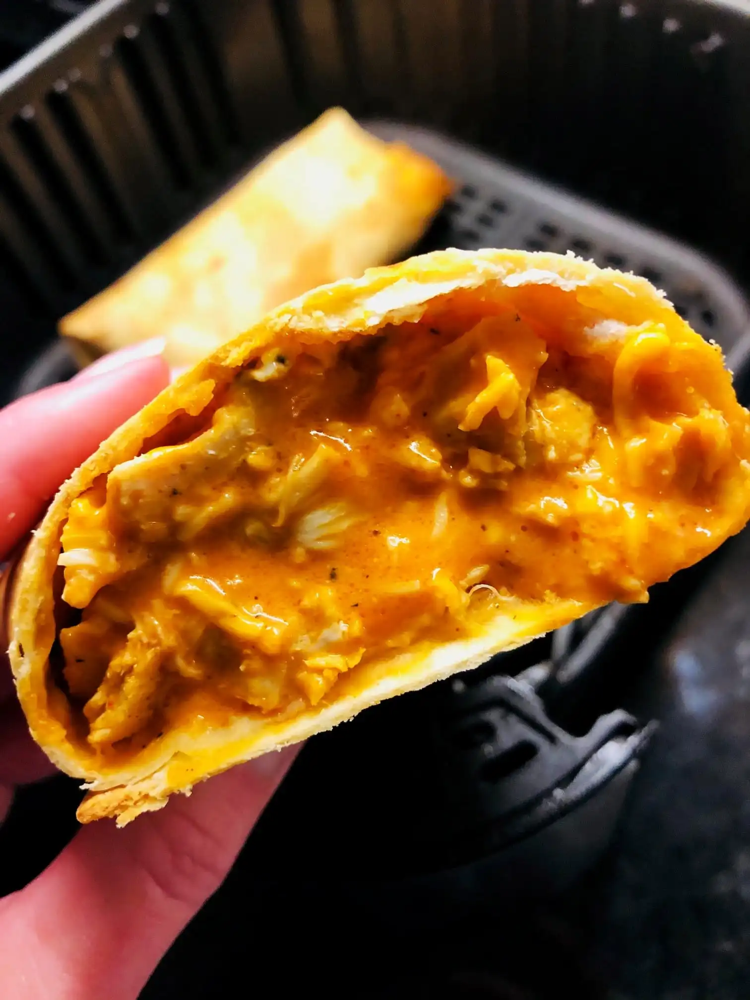

Buffao Chicken Burrito
Buffalo Chicken Burrito

Description
This is how you make the simple, macro-friendly buffalo chicken burritos. Within this recipe, it will contain low fat, low calorie, high protein macros that will help with weight loss and also focus on building your muscle.
Ingredients
The following below will contain all the ingredients you need for this meal prep. Today, we will focus on making 4 burritos in total using these ingredients.
- 1.5 pounds of chicken breast
- Smoked Paprika
- Garlic powder
- Onion Powder
- 1 cup 2% fat cottage cheese
- 1 tb low fat cream cheese
- 1 cup of fat free mozzarella cheese
- 1 cup zero calorie hot sauce (any hot sauce, just make sure it is 0 calories)
- Low carb tortillas
Steps
- Cut your chicken breasts into cubes.
- Season it generously with the smoked paprika, garlic powder, and onion powder.
- Cook the chicken on a pan until it is thoroughly cooked.
- Next we want to focus on the sauce. For the sauce, put in your cottage cheese, low fat cream cheese, and hot sauce into a blender. (You do not need to blend it all together, however, I recommend doing so)
- If you have juice from the chicken, drain it.
- Mix the sauce, chicken, and mozzarella cheese all in a bowl.
- From here, you want to get four tortillas and evenly distribute the chicken onto the tortillas to form a burrito.
- Once you have the burritos made, you can store them in the fridge/freezer with some aluminum foil.
- To preheat, get a hot pan and heat up the burritos. This will give it a nice crunchy burrito.
- Last step is to serve it on a plate and enjoy!